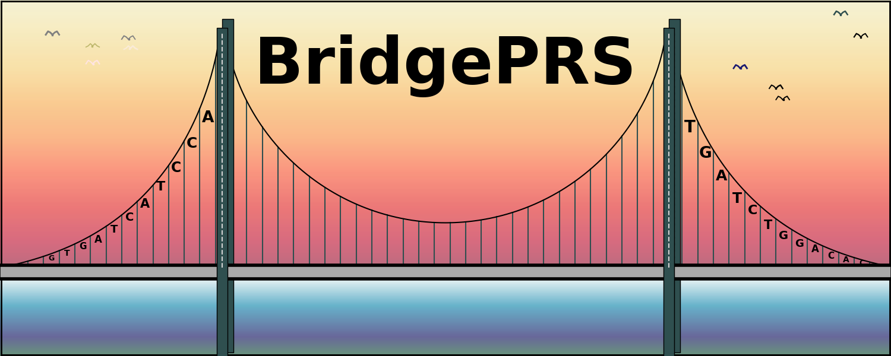

BridgePRS is a Bayesian method that utilises ridge regression developed to tackle the "PRS Portability Problem". The PRS portability problem causes lower PRS accuracy in target populations not included in the GWAS base used to estimate the PRS. This is due to differences in linkage disequilibrium (LD), allele frequency and gene–environment interactions affecting causal effect sizes between the base and target populations.
Download Links
| BridgePRS Packages | Reference Panels | ||||||||||||||||||||||||
|---|---|---|---|---|---|---|---|---|---|---|---|---|---|---|---|---|---|---|---|---|---|---|---|---|---|
|
|
Latest Updates
2023-09-15 (v0.1.7)
- We have added sample thousand genomes data.
- update log can be found here
Overview
- BridgePRS is written in R with a Python wrapper. Plink. is used in the first stage of the modelling for clumping and thresholding (all markers within clumps are retained for analysis). For more information on installing dependencies, please refer to Requirements.
- To get BridgePRS running using toy data see our Quick Start Tutorial..
- Following the Quick Start, the full guide provides more realistic examples to help you get started with your own data.
Citation: Our Manuscript is published in Nature Genetics
Please cite our paper:
Hoggart C, Choi SW, García-González J, Souaiaia T, Preuss M, O'Reilly P. BridgePRS leverages shared genetic effects across ancestries to increase polygenic risk score portability. Nat Genet 56, 180–186 (2024). https://doi.org/10.1038/s41588-023-01583-9
Contact
For questions about the methodology, this website, or our manuscript please contact Dr Clive Hoggart, Dr Tade Souaiaia, or Dr Paul O'Reilly. For source code and coding issues please visit the bridgePRS github here.
Acknowledgements
We would like to thank Brian Fulton-Howard for his feedback and help with testing.